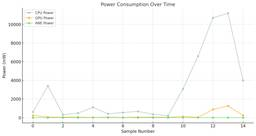
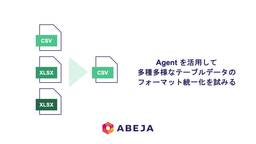
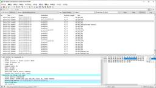

ABEJA Tech Blog
https://tech-blog.abeja.asia/
中の人の興味のある情報を発信していきます
フィード
SpaceXのロケット技術を、自作シミュレーターで解説する 2
2
ABEJA Tech Blog
私が紹介したいのはSpaceXの根幹をなすロケットの制御技術についてである。技術紹介をするためにシミュレーターを自作し手動と自動制御で着陸の難しさを体感してもらおう。
15時間前
Azure OpenAI Service で設定ミスって1,000万円請求されたくない！ 2
ABEJA Tech Blog
この記事は ABEJA アドベントカレンダー 2024 の19日目の記事です。 こんにちは。システム開発部の鈴木（@szpshota）です。 3年くらい前にエンジニアとして入社して、去年の暮れくらいからマネージャーをやっています。 今でも業務含めてコードは書いてますが、組織力や生産性を高めるための仕組みづくりや組織運営が主な仕事になってきました。 今回は組織マネジメントの話・・・ではなく、怖ーい Azure OpenAI Service の高額請求の話と Terraform の話をしようと思います！ 目次は以下の通りです。 Azure OpenAI Service の高額請求について Prov…
15時間前

swift-transformers で LLM を動かしてみた 11
ABEJA Tech Blog
ABEJA でエンジニアをしている石川です。これは ABEJA アドベントカレンダー 2024 の 18 日目の記事です。 CoreML で機械学習モデルを動かす swift-transformers を試す Mistral 7B モデルを動かす swift-transformers で推論を実装する Python で動かしてみる CoreML モデルに変換 Swift で動かす パフォーマンス We Are Hiring! macOS/iOS で機械学習モデルを動かすにはいくつかの方法がありますが、Apple シリコンの能力を十分に引き出すためには CoreML を使うのが最適です。 Pyt…
2日前
非エンジニアの救世主？！ノーコード版Streamlit『Writer Framework』を試してみた
ABEJA Tech Blog
こちらはABEJAアドベントカレンダー2024 17日目の記事です。 こんにちは、ABEJAでプロジェクトマネージャーをしている高崎です。 はじめに 最近、v0やClaude ArtifactのようなAIを活用したコード生成やノーコードツールが注目を集めています。そんな中でも、プロトタイプ開発においては、スピーディさとカスタマイズ性を求める声が多く、ABEJAではStreamlitを使用することが多いです。 しかし、StreamlitはPythonに慣れていないメンバーにとってはハードルが高いツールでもあります。そこで、ノーコード版Streamlitとも呼ばれる「Writer Framewor…
3日前

Agent を活用して多種多様なテーブルデータのフォーマット統一化を試みる
ABEJA Tech Blog
こんにちは！ABEJAでエンジニアをしている飯嶌です。これはABEJAアドベントカレンダー2024の16日目の記事です。 弊社では、ABEJA Platformに組み込まれた一つのアプリケーションとして「ABEJA Insight for Retail」を提供しています。このサービスには、IoTデバイスで取得したデータと、取り込んだPOSデータをもとに分析できる機能が備わっており、主には小売業界で活用されています。 POSデータは企業様からお預かりお預かりいただいたものですが、企業ごとにフォーマットや内容が異なり、多種多様です。 今回は、LLMを活用してそのようなデータのテーブルフォーマットの…
4日前
スクラムチームがXPを使ってみたら…柔軟な開発の裏にある成功と課題 2
ABEJA Tech Blog
スクラムだけじゃない！XPを取り入れたことで見つけた開発の新たな可能性とは？📈 この記事では、アジャイルコーチとしてABEJAのチームでスクラムにエクストリームプログラミング（XP）を組み合わせてみた実践経験をシェアします。オンサイトカスタマーとの密なコラボレーション、スピード感あふれるイテレーション、そしてスプリントとXPのハイブリッドで見えた成功と課題とは？🎯
5日前

Bluefruit LE Sniffer x WiresharkでBLE通信を見てみる 2
ABEJA Tech Blog
1.はじめに 2.セットアップ手順 2.1 Snifferの購入 2.2 Wiresharkのインストール 2.3 nRF Snifferのインストール extcapフォルダのコピー Profileのコピー pyserialのインストール 動作確認 2.4 Wiresharkの起動 2.5 Snifferコードの一部修正 3.実験 3.1 ESP32を使った準備 3.2 ESP32アドバタイズの様子 3.3 セントラルからの接続 3.4 GATTによるデータ通信 セントラル→ペリフェラルへのデータ取得要求 (Read) ペリフェラル→セントラルへのNotify (通知) セントラル→ペリフェラ…
6日前
リモートのエンジニアチームに捧ぐ！今年使ってみて便利だったツールを厳選してみた 2
ABEJA Tech Blog
これはABEJAアドベントカレンダー2024の13日目の記事です。 こんにちは、ABEJA Platform に搭載しているアプリケーション、「ABEJA Insight for Retail」の開発と運用を担当しているチームのリーダーを務めている森永です。 突然ですが、 みなさんのチームではどんなリモートワークの工夫をしていますか？？ ABEJA 内のエンジニアリングに関わるチームでは、フルリモートでの働き方を取り入れており、弊チームでも関東圏外から参画しているメンバーが複数在籍しています。 最近はリモートワーク下でのマネジメントの難しさや会社資産の有効活用を謳い、各社ともに RTO の動き…
7日前
生成AI時代にあえて一からプログラミングで作曲してみた 1
ABEJA Tech Blog
本記事はABEJAアドベントカレンダー2024 12日目の記事です。 こんにちは！データサイエンティストの安倍（あんばい）です。 競馬事業部部長を勝手に名乗り、社内にて競馬布教活動に従事しています。今年も順調に収支はマイナスです。 さて、今回のテーマは「作曲」になります。生成AIブームの昨今、誰でも簡単に文章や画像、音楽、コードetc. 何もかも生成できる時代になりました。 このタイミングであえて時代に逆行し、「理論ベースで一からプログラミングで曲を作る」という逆張りの取り組みをしたので紹介したいと思います。 目次 目次 音とは何か 疑似データ生成 複雑な波を分解する 基本波形の紹介 サイン波…
8日前
型安全かつシンプルなAgentフレームワーク「PydanticAI」の実装を解剖する 36
ABEJA Tech Blog
はじめに こちらはABEJAアドベントカレンダー2024 12日目の記事です。 こんにちは、ABEJAでデータサイエンティストをしている坂元です。最近はLLMでアプローチしようとしていたことがよくよく検証してみるとLLMでは難しいことが分かり急遽CVのあらゆるモデルとレガシーな画像処理をこれでもかというくらい詰め込んだパイプラインを実装することになった案件を経験して、LLMでは難しそうなことをLLM以外のアプローチでこなせるだけの引き出しとスキルはDSとしてやはり身に付けておくべきだなと思うなどしています（LLMにやらせようとしていることは大抵難しいことなので切り替えはそこそこ大変）。 とはい…
8日前

Embedding Model を用いたキーフレーズ抽出の検証といろんな Embedding Model の比較
ABEJA Tech Blog
こんにちは！ABEJAでデータサイエンティストをしている藤原です。ABEJAアドベントカレンダー2024 の11日目のブログになります！ キーフレーズ抽出を簡単に試すという機会がよくあるのですが、簡単に検証する範囲だといつも同じツール・モデルを使っているため、他の方法でも上手くキーフレーズ抽出ができないか？ということで今回いくつか検証してみました。やることとしては、まず Embedding Model を使って日本語の長めの文章からキーフレーズを上手く抽出できるか？というのを検証します。その上で、色々な Embedding Model 間で抽出されるフレーズがどのように違うか？も比較してみます…
9日前
5年分のNotionのリリースノートを振り返ってみた ~社内運用と個人Webサイト運営での学びを添えて ~
ABEJA Tech Blog
はじめに 皆さん、お久しぶりです。ABEJAで細々とNotion普及活動をしている齋藤です。 こちらは ABEJAアドベントカレンダー2024 の10日目の記事です。 他にも弊社メンバーが面白い記事をどんどん投稿予定なので、是非チェックしてみてください。 このブログで語りたいこと 2024年はChatGPTなどのLLMが多くのソリューションに導入され、多くのユーザーがLLMの恩恵を享受する1年となりました。 例に漏れず、NotionからもLLMによるQ&A機能や、ドキュメントの自動生成機能がリリースされました。 そこで、今回は今まで私が書いたNotionの記事を横目に、利用者視点でNotion…
10日前
AWS Lambdaを支える技術
ABEJA Tech Blog
こんにちは、今年の4月に新卒入社でABEJAに入社しました島倉と申します。 現在はプロジェクトマネージャーとして働いています。 これはABEJAアドベントカレンダー2024の9日目の記事です。 なぜFirecrackerが開発されたのか 従来の仮想化技術の課題 Firecrackerの設計要件 Firecrackerとは何か Firecrackerのアーキテクチャ Firecrackerのコード解説とその仕組み microVMの仕組み MicroVMはなぜ軽量なのか 1. 起動プロセスでカーネルを直接ロード 2. mmap による効率的なメモリ管理 3. KVMを利用したvCPU管理 4. S…
11日前
OpenAI Realtime API で英語スピーチを代行してもらう
ABEJA Tech Blog
はじめに こんにちは。 ABEJAのシステム開発部でエンジニアをしている中島です。 こちらはABEJAアドベントカレンダー2024 8日目の記事です。 本記事では、英語のスピーチが苦手な中島がAIの力で英語を話すことに挑戦 そして挫折 する話をします。 今回の記事の対象者はソースコードをある程度読むことができる方を想定しています。 大枠として下記の構成で進行します。 先に結論 OpenAI Realtime API とは アプリケーション方針 リファレンス読解 アプリケーションの実装 まとめ 先に結論 OpenAIのRealtime APIのリファレンス実装を見ながら、リアルタイム翻訳機能を実…
12日前
LLMのためにHTMLの構造解析を頑張ってみた
ABEJA Tech Blog
こんにちは！ABEJAのシステム開発部でエンジニアをしている胡です。こちらはABEJA アドベントカレンダー 2024 、7日目の記事です。 この記事では、ウェブサイトから本文をきれいに抽出する方法を色々試してみた話をまとめています。きっかけは、RAG（Retrieval-Augmented Generation）やLLM（大規模言語モデル）で利用するデータを効率よく取り出せないかと思ったことでした。 もしサイトの内容が一つの原稿やデータとしてまとまっていれば、そのままLLMに渡すだけで使えますよね。でも、同じ会社内でも、複数のチームや部門がそれぞれ記事を作成していると、データを一箇所にまとめ…
13日前
「新技術・サービス検証支援」という支援施策を始めました
ABEJA Tech Blog
ABEJAのCTO室の村主です。ABEJAアドベントカレンダー2024 6日目のブログになります。 本日は、「新技術・サービス検証支援」という支援施策の内容と狙いを書いていきます。 ABEJAに興味ある方や、AI系ツールの支援設計を行う方に参考になればと思います。 「課題」と「狙い」に想いが詰まっているのでそこだけ見ていただくでもOKです。それ以降は施策の工夫点になります。 「新技術・サービス検証支援」の特徴 課題 元々ABEJAではご多分に漏れずChatGPT Plusの利用を支援する施策を行なっていました。しかし昨今、2週間単位くらいで色々なAIツールがバズります。Gemini ProやC…
14日前
ESP32 x Prometheusで温度・湿度・気圧データを蓄積・可視化する
ABEJA Tech Blog
はじめに 作ったもの ESP32 x BME280 ハードウェア準備 ESP32を用いた回路設計 部品実装（リフロー） センサー仮組み ESP32ソフトウェア準備 platformio.ini src/main.cpp データ処理部分 受信部 (receive.py) 自作Exporter (exporter.py) Prometheus x Grafana x Redisの立ち上げ prometheus.ymlの準備 docker-compose.yamlの準備 コンテナ群の立ち上げ 最後に We Are Hiring! はじめに ABEJA大田黒です。これはABEJAアドベントカレンダー2…
15日前
ちょこっと公開！ABEJAで実践するセキュリティ対策とは？
ABEJA Tech Blog
初めに 変わりゆくセキュリティ環境 現代企業が直面する課題 セキュリティアーキテクチャの全体像 1. ID・認証基盤（Microsoft Entra ID） 2. マルチプラットフォーム対応のエンドポイント管理 3. EDR（Microsoft Defender for Endpoint） 4. CASB（Microsoft Defender for Cloud Apps） 5. SASE（Netskope） クラウドサービスの管理方針 Critical SaaS Non-Critical SaaS 今後の展望 検討中の取り組み まとめ We Are Hiring! 初めに ABEJAアドベン…
16日前
Google ドキュメント アドオン + LLM でAI校正・レビュー機能を作ってみた
ABEJA Tech Blog
はじめに この記事は、ABEJAアドベントカレンダー2024 3日目の記事です。 はじめまして。ABEJAのシステム開発部でエンジニアをしている大倉(sheepover96)と申します。 LLMが登場して数年が経ち、多種多様なユースケースを見かけるようになりました。 個人的にはLLMで全部生成！なものにすごいと思わされつつ、いつも利用しているツールに自然にAIが溶け込んでいるものが特に便利だなーと感じています（例えばAIエディタの Cursor など）。 ということで今回は、普段利用しているドキュメントツールにLLMを組み込んでみました。 ABEJA社内ではドキュメントツールとして基本的に N…
17日前
個人アプリ開発で課金がかさむ設計になっていた話
ABEJA Tech Blog
突然の通知 なぜ気付けなかったのか？ 応急対応：まずは火を消す このアプリでのGoogle Places Detail APIの呼び出し方法 アプリの価値を見つめ直す 写真アップロードを促す仕掛け アプリを広めるのは簡単じゃない まだ、課題が… We Are Hiring! インターンシップ生としてABEJAで活動している和田です。こちらは、ABEJAアドベントカレンダー2024の2日目の記事です。 大学院で研究やインターンをこなす傍ら、同級生3人と自分たちのレベルアップのため「気分や好きな場所に合わせて、お出かけを提案するアプリ」の開発に取り組んでいます。 今回は、そんな私たちが直面した 高…
18日前
不確実性を抱き締めて
ABEJA Tech Blog
こんにちは、ABEJAでプロジェクトマネージャーをしている都倉と申します。これはABEJAアドベントカレンダー2024の1日目の記事です。AI技術が急速に進化する中で、私たちは日々新たな挑戦と向き合っています。 AI時代における不確実性マネジメントというテーマで、非エンジニアの仮説検証のスピードと質がこの2年で全然違うものになってきましたねというお話しができればと思います。 1. 不確実性について 不確実性と聞くと、どのような印象をお持ちでしょうか？仕事の場面ではリスクと捉えられ、あまり良い印象を持たないかもしれません。しかし、少し思い出してみてください。子どもの頃、友達と一緒にあてもなく自転…
19日前
【手順付き】初心に立ち返ってGPT-2を学習してみる
ABEJA Tech Blog
はじめに ABEJAでデータサイエンティストをしている真鍋です。 アドベントカレンダーぶりの登場になります。 今回も生成AI、特にLLM (大規模言語モデル) 系のネタです。 LLMが登場して久しく、業務でLLMを使うのが当然の方も多くなっているのではないかと思います。裏では、私のようなデータサイエンティストやエンジニアが、APIを通じてGPT等の言語モデルを利用する場合も一定あるのではないでしょうか。 一方で、ただAPIを叩くだけではわからない部分も多いため、実際に作ってみようじゃないか、というのが、今回の記事の趣旨です。 とはいえ、実際の大規模言語モデルは、GPUを何台も用意するレベルで、…
1ヶ月前
OpenAI Chat Completion、Gemini、ClaudeのSDKインターフェースを揃えようとしてハマった
ABEJA Tech Blog
TL; DR 以下のAPIを全部同じインターフェースで使えるように挑戦した時にハマったポイントについて書いた Chat Completion API (OpenAI、Azure OpenAI) Gemini API (Google AI、VertexAI) Claude API (Anthropic、Amazon Bedrock) みんなちょっとずつ違ってて意外と大変だよ。 はじめに こんにちは、データサイエンスグループの坂元です。以前にこんな記事を書いて各方面からコメントを頂き、良くも悪くもみんなLangChainに対して色々考えがあるのだなぁと思いました（ちなみに私自身はLangChain…
4ヶ月前
スイカゲームを強化学習で攻略したい（環境構築編）
ABEJA Tech Blog
はじめに ハードウェアの準備 Arduino の準備 Switch -> PC 環境の実装 stepメソッド 状態の遷移 報酬 を計算する 終了判定 reset メソッド ゲームのリトライ 自動プレイのテスト はじめに ABEJAでデータサイエンティストをしている清田です。今回は強化学習で何かゲームの学習をやってみたいと考え、その題材としてスイカゲームを扱えるようにしました。「強化学習で攻略したい」と銘打っているのですが、この記事で扱うのはその準備までです。 スイカゲームは Nintendo Switch （以下 Switch）用ゲームとして発売された落ち物パズルゲームです。箱の中に果物を落と…
4ヶ月前
ABEJA Platform を支える技術: Elixir Language
ABEJA Tech Blog
はじめに こんにちは！ABEJA でプロダクト開発を行っている森永です。 本日は、 ABEJA Platform のゲートウェイにて利用されている言語、 Elixir Language (以下、Elixir と表記) を紹介できればと思います。 利便性の高い言語である一方、日本語での情報が未だ少なく、こちらの記事が言語の認知を広げる一助になれれば嬉しいなと思っています。 Elixir の概要 Elixir とは？ Elixir は、スケーラブルで保守しやすいアプリケーションを構築するために設計された動的な関数型言語で、Jose Valim 氏によって開発されています。その最大の特徴として、低遅…
4ヶ月前
Eraser AIのポテンシャルを引き出すためにClaudeと組み合わせて使ってみる
ABEJA Tech Blog
こんにちは！ABEJA でエンジニアとして活動している飯嶌です。今年の4月に新卒で入社しました！今回は技術設計やドキュメント作成を支援するAIツールである「Eraser AI」に関して、今まで個人利用で使ってきてその感想とその使い方に関してお話しできればと思います。 Eraser AI とは : 自然言語プロンプトを使用して技術図解やドキュメントを生成できるAIツール 1. 図表生成：4つの種類の図表に対応 2. 無限キャンバス：大規模設計も自由自在 3. Diagram-as-code：バージョン管理が簡単に 4. デザイン性：充実したアイコンやカラーリング Eraser AIの料金体系 1…
5ヶ月前
欠損, 非同期, 不規則な時系列データのモデリング - Neural CDEs の理論の導入部と実装
ABEJA Tech Blog
こんにちは！ABEJAでデータサイエンティストをしている藤原です。今年の4月に新卒で入社しました！ 個人的な趣味で、少し前から「Neural Differential Equations」という分野の勉強を少しずつしているのですが、その中で「Neural Controlled Differential Equations」という研究が面白いなと感じました。そこで、理論の勉強だけじゃなく実際に動かしてみよう！と思い、今回は「Neural Controlled Differential Equations」について、前半では理論の導入部を、後半では具体的な実装と併せて紹介します。 今回の説明や実験…
6ヶ月前
【ABEJAアジャイル活動記録】チームの潜在力を解放！アジャイルチームのためのSECIモデル活用術
ABEJA Tech Blog
はじめに こんにちは！ABEJA でスクラムマスター/アジャイルコーチをしている小川です！ アジャイルのコラボレーションは、効果的な意思決定と迅速な問題解決を可能にします。 また、その中で行われるチームメンバー間の継続的な意見交換やアイデア共有は、イノベーションの源泉とも言える創造性をもたらすことでしょう。 さらに、チーム全体の協力と信頼関係の構築にも貢献します。より良いプロセスやナレッジの創出によって、成果物の品質向上につながります。 本記事では、アジャイルのコラボレーションの重要性とその具体的なメリットについてSECI モデルを使って探求していきます。 アジャイルのコラボレーション 「アジ…
6ヶ月前
【ABEJAアジャイル活動記録】なぜアジャイルを採用するのか？
ABEJA Tech Blog
こんにちは！ABEJA でスクラムマスターをしている小川です！ 最近、新規加入メンバーやステークホルダー向けにアジャイルとは？について説明/解説をする機会が増えたので、そこでよく話している内容をまとめてみました。 アジャイルについてギュッと短くまとめてみましたので、「知らないよ」という人には学びのきっかけに、「もう知ってるよ」という方にもチームや組織への説明材料の一つとしてお役に立てれば幸いです！ 目次 はじめに 突然ですが... ウォーターフォール型の開発プロセスをおさらい アジャイルとは？ アジャイルの思想と手法 アジャイルの実践とその先にあるもの Be アジャイルな活動 結びのようなもの…
6ヶ月前